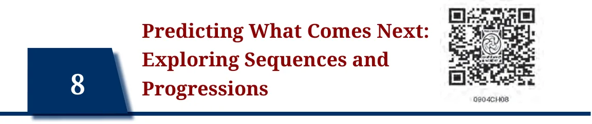
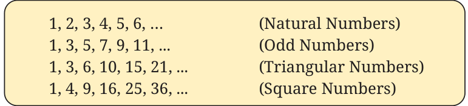
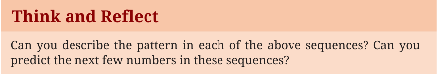
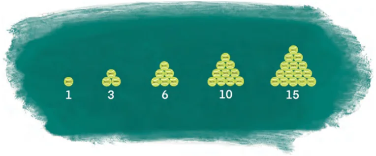
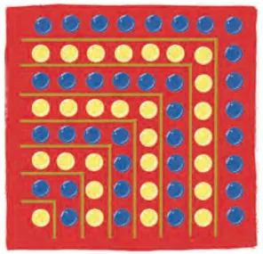
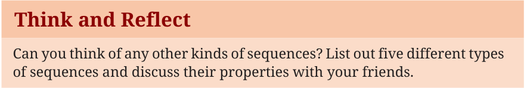

We see patterns around us everywhere, be it in nature, in art, in music, in finance and in many other contexts in everyday life. Patterns help us make sense of the world and predict what comes next. In mathematics, sequences are special kinds of patterns formed by numbers or other objects arranged in a particular order. By understanding sequences, we can explore fascinating ideas about how numbers grow, shrink, or repeat and even use these ideas to solve real-life problems. In this chapter, we shall explore patterns in sequences of numbers. We will then find rules to help us predict more numbers of the sequence. Let us begin by looking at some number sequences that you have already seen in Grades 6, 7 and 8.

The three dots … indicate that the sequence continues indefinitely.

Before we proceed, let us define a sequence as an ordered list of numbers where each number is a term of the sequence. Thus, in the sequence of square numbers, 1 is the first term, 4 is the second term, 25 is the fifth term and so on. Also, sequences may be finite or infinite. The sequences mentioned above are infinite. But the sequence 6, 12, 24, 48, 96 is a finite sequence of five terms. Can you think of other finite sequences that you see in your daily life?
As you already know, in the sequence of natural numbers, every number (or term) is one more than the previous number. In the sequence consisting of all the odd numbers, there is a difference of 2 between any two consecutive terms. In the sequence of triangular numbers, the difference between consecutive terms (among the first six terms) are 2, 3, 4, 5 and 6. We may rewrite the triangular numbers in the form of sums of natural numbers as \(1 = 1\), \(3 = 1 + 2\), \(6 = 1 + 2 + 3\), \(10 = 1 + 2 + 3 + 4\), and so on. Thus, each term of the triangular number sequence is the sum of the natural numbers up to that term. For example, 15, the fifth triangular number, is equal to \(1 + 2 + 3 + 4 + 5\). This is represented by the diagram in Fig. 8.1, where each triangular number is represented by a triangular array of dots. Can you draw the patterns for the next two terms of the sequence?

Let us now shift our attention to the sequence of square numbers, 1, 4, 9, 16, 25, 36, ... Note that the differences between consecutive terms (for the first six terms) are 3, 5, 7, 9 and 11. Also \(1 = 1\), \(4 = 1 + 3\), \(9 = 1 + 3 + 5\), \(16 = 1 + 3 + 5 + 7\), and so on. Each term in the square number sequence is the sum of the odd numbers up to that term. This interesting relationship between the odd numbers and square numbers can be represented by the diagram in Fig. 8.2. Can you explain the relationship? You may recall some of these ideas from Grade 6, Chapter 1!

Exercise: Consider the sequence 1, 4, 7, 10, 13, … Can you predict the next four terms? Can you derive the first 10 terms of the sequence obtained by adding all the terms up to a given term of this sequence? (Hint: The first term is 1. The second term is \(1 + 4 = 5\), the third term is
\(1 + 4 + 7 = 12\), and so on.)
In some sequences (like the ones described till now), the terms follow a certain pattern, a rule or order. To describe these rules it is helpful to have a convenient notation to describe a sequence. We can use t_{1} to represent the first term of a sequence, t_{2} to represent the second term, and so on. In this notation, the subscripts match the term numbers. Thus, for the sequence of odd numbers, \(t_{1} = 1\), \(t_{2} = 3\), \(t_{3} = 5\), \(t_{4}= 7\) and so on. This notation helps to connect the position of the term to the actual term. For example, \(t_{4} = 7\) tells us that the term in the fourth position is 7. We may need to talk about more than one sequence at a time. We can use different letters for these. Hence, we can use t_{1}, t_{2}, t_{3} , … for one sequence, s_{1}, s_{2}, s_{3} , … for another one, u_{1}, u_{2}, u_{3} , … for a third sequence, and so on. Exercise: Can you write t_{5}, t_{6}, t_{7} and t_{8} for the sequence of triangular numbers? There can be many kinds of sequences. For example, the terms could be fractions or negative integers. The ones we have discussed so far have terms that are increasing. But there could be sequences such as 1, , , , … where \(t_{1} = 1\) and the following terms are unit fractions \(\frac{1}{2} \frac{1}{3} \frac{1}{4}\) occurring in decreasing order. We can also have sequences such as \(- 7\), \(- 3\), 1, 5, 9, … where \(s_{1} = - 7\), and consecutive terms have a difference of 4. Note that when we use the notation t_{n} for describing a term, n is always a non-negative integer but the term itself can be negative, or in fact any real number.
